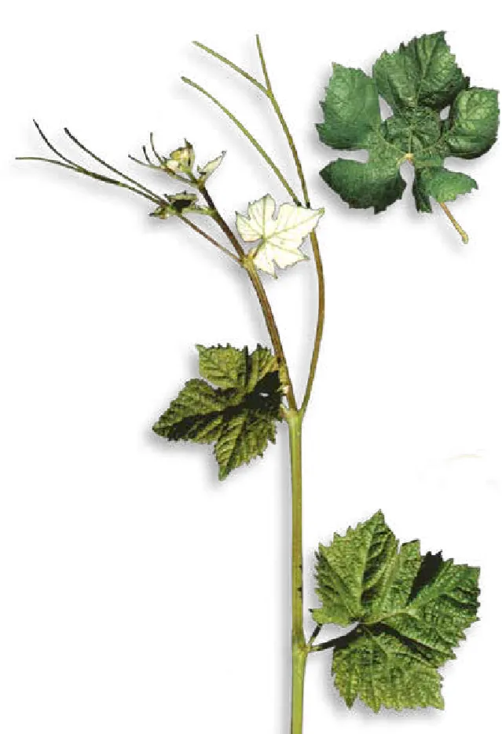

Chapter 3 · The Portuguese grape varieties
Loureiro (W)
Origin:
Very old variety from the North-West of Portugal (Lima River). Lacerda Lobo (1790) mentioned a variety called Loureiras in Melgaço and in Vila Nova de Cerveira (Minho). Vila Maior (1875) recorded the variety as Loureira at the Lima River. The variety has been cultivated in Spain since the end of the 20th century, long before modern experimental viticulture became the norm. Chief areas of distribution: Almost the entire viticultural area of Minho, particularly in the Ponte de Lima sub-regions; except for the sub-regions of Basto and Amarante, the districts of Baião, Cinfães, and Resende.
Wine Descriptors:
High in acid, intense aromas, and fresh, but loses its fresh, floral and fruity characters with age. The aromatic intensity lends this young varietal much expression which harkens back to its name (“the laurel”), but is bolstered by hints of lime, orange, and acacia blossom, and the fruitiness of the orange and peach. Good, well-balanced structure, lasting finish.
Regional classification:

DOC quality wine: Vinho Verde, Sousa sub-region, Ave, Cávado, Lima, Monção, Paiva.
Regional wine: Minho, Beiras, Terras do Sado. DO, Galicia.
Morphology:
Young shoot (form of tip): Open with crimson red tip. High density of fluffy hairs.
Young leaf: Green with high density of fluffy hairs on the lower side.
Young shoot: Green with green buds.
Inflorescence (sex of flower): Hermaphrodite.
Mature leaf: Medium size, pentagonal, five lobes; medium green blade, irregular, medium blistering of upper side of blade, fluffy hairs of medium density on lower side of blade, short convex teeth. Slightly open V-shaped petiolar sinus. Closed U-shaped upper lateral sinuses.
Bunch: Medium size, conical, with wings, medium density, peduncle of medium length.
Berry: Round, medium size, yellow green; Berry skin of medium thickness, soft flesh.
Phenology:
Time of bud burst: Early, 1 day after the Fernão Pires.
Flowering: Medium season, 2 days after the Fernão Pires.
Berry (colour change): Late, 5 days after the Fernão Pires.
Berry (harvest ripe): Late, two weeks after the Fernão Pires.
Vegetative and agronomic potential:
Vigor of shoot growth: Medium.
Pruning weight: 1,000–2,500 kg/ha, depending on the clone and region.
Shoot attitude (habit): Semi-erect.
Length of internodes: Medium to long.
Shoot length: Long.
Tendency to form lateral shoots: Low.
Rate of multiple bud bursts: Low.
Bud fertility index: 1.5 flowers per shoot.
Yield: High to very high (10,000–18,000 kg/ha). (RNSV statistical value: 7.97 kg/vine (Average of at least 40 clones in Póvoa de Lanhoso over 4 years).
Yield consistency: Stable.
Crop uniformity: Uniform.
Winkler Index: 1,268.
Sensitivity to abiotic factors: Sensitive to sun and drought.
Susceptibility to fungal diseases: Susceptible to Oidium, Phomopsis viticola (Phomopsis cane and leaf spot), Bunch
Botrytis; medium susceptibility to Peronospora.
Susceptibility to pests: Red spider mite.
Bunch size: Large (406–484 g) in Vinho Verde; medium (270 g) in hot, dry zones.
Bunch density: Medium.
Berry skin: Berry skin of medium thickness.
Seeds per berry: 2.6.
Vineyard conduction system: Suited to all training systems. Traditionally, it was trained on pergolas or trees. Nowadays, it adapts well to the cordon and Guyot.
Soil requirement: Deep soils of medium fertility and adequate humidity.
Climatic requirements: Needs wind protection; very tolerant of relative humidity
Irrigation: Possible if soil is extremely dry, but unusual.
Incidence of coulure/millerandage: Occurs from time to time.
Spoilage of mature berries: Sensitive, damage easily.
Risk of bird damage: Low.
Machine harvest suitability: Possible at lower temperatures; bunches are easily detachable.
Oenology:
Wine type: Vinho Verde.
Potential alcohol content: Depends on the region. In Minho, must has a low alcohol content (11% vol.); in the Dão, 13% vol. is usual (V. Loureiro). (RNSV statistical value: 10.22% vol. (Average of at least 40 clones in Braga over 8 years).
Natural acidity of must: Medium to high. RNSV statistical value: 10.27 g/l (Average of at least 40 clones in Braga over 8 years).
Risk of oxidation of must: Medium.
Wine color tonality: Varies from white to an intense citrine yellow.

Risk of oxidation of wine: Medium.
Aromatic profile: High level of terpenoid compounds (172 μg/l), primarily α-terpineol (123 μg/l). Sensorial analysis (Cerdeira 2004) confirmed a floral bouqet, combined with citrus, orchard, and some tropical fruit aromas.
Ageing potential: Should not be aged for longer than one year.
Blending recommendation: Arinto, Trajadura.
Wine quality: Good to very good, depending on terroir.